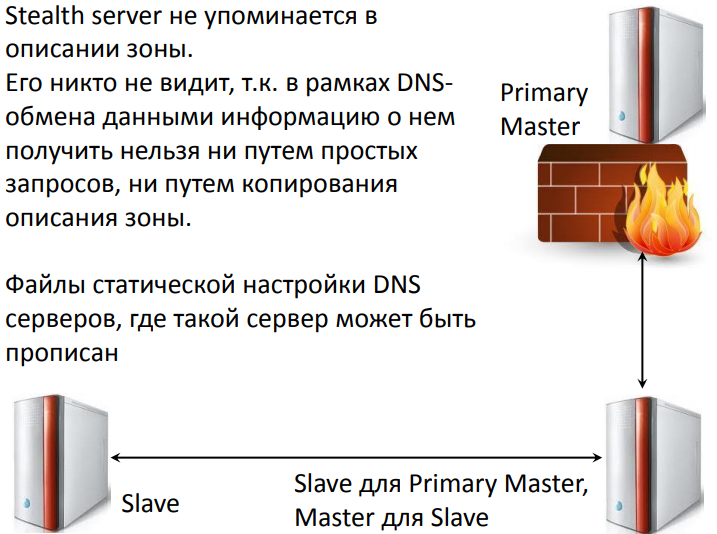

DNS
Pault Mockapetris - автор DNS.
DNS - это иерархическая база данных, сопоставляющая имена сетевых узлов и их сетевых служб IP-адресам узлов. Содержимое этой базы, с одной стороны, распределено по большому количеству серверов службы DNS, а с другой стороны, является централизованно управляемым.
В основе иерархической структуры базы данных DNS лежит доменное пространство имен (domain namespace), основной структурной единицей которого является домен, объединяющий сетевые узлы (хосты), а также поддомены. Процесс поиска в БД службы DNS имени некоего сетевого узла и сопоставления этому имени IP-адреса называется "разрешением имени узла в пространстве имен DNS".
DNSИсторияПринцип работыИерархия построенияКлиенты и серверы DNSВиды запросовРекурсивныйНерекурсивныйИспользование кэшаРекурсивная процедура разрешения именТипы серверовПроблема распостранения измененийDNS UPDATEDNS зоныПринцип работыПередача зоныКонфигурация DNS сервераФормат DNS пакетаКриптосистемы с открытым ключомDNSSEC
История
Систему доменных имен разработал в 1983 году Пол Мокапетрис. Тогда же было проведено первое успешное тестирование DNS, ставшей позже одним из базовых компонентов сети Internet. С помощью DNS стало возможным реализовать масштабируемый распределенный механизм, устанавливающий соответствие между иерархическими именами сайтов и числовыми IP-адресами.
Файл host и плоские имена поддерживаются и по сей день таблицами соответствия IP-адреса и имени хоста (текстовые файлы с именем hosts).
- 127.0.0.1 localhost
- 77/88/21/3 www.google.com
Для установления соответствия символьного имени и MAC-адреса использовались широковещательные запросы. Широковещательный способ разрешения имен реализован в NetBIOS.
- WINS - служба сопоставления NetBIOS-имен с IP-адресами.
Принцип работы

- Когда пользователь запускает веб-браузер и вводит название домена сайта, его ПК отправляет запрос к DNS-серверу интернет-провайдера для получения IP-адреса, на котором находится домен.
- Если DNS-серверы провайдера не обнаруживают в своем кэше информации о запрашиваемом сайте, то отправляют запрос на корневые DNS-серверы.
- Корневой DNS-сервер ищет в своей базе данных информацию о серверах имен хостинг-провайдера, на которых присутствует этот сайт. Далее, он сообщает их кэширующему DNS-серверу провайдера.
- После того, как кэширующий DNS-сервер интернет-провайдера получает информацию о серверах имен хостинг-провайдера он опрашивает любой из них и..
- в случае получения положительного результата получения IP-адреса, помещает в кэш. Кэширование используется для того, чтобы снизить как нагрузку на интернет-каналы, так и для ускорения получения результата запроса.
- После этого DNS-сервер провайдера передает IP-адрес браузеру пользователя, совершившему запрос сайта.
- И уже после этого браузер, получив IP-адрес запрашиваемого сайта..
- переходит на сам сайт.
Иерархия построения
Основой DNS является представление об иерархической структуре доменного имени.

Домен - узел в дереве имен, вместе со всеми подчиненными ему узлами(если таковые имеются), то есть именованное поддерево в дереве имен.
Зона - часть дерева доменных имен, размещаемая как единое целое на некотором сервере доменных имен.
Делегирование - операция передачи отвественности за часть дерева доменных имен другому лицу или организации.

Полностью определенное имя домена (Fully Qualified Domain Name)
Состоит из непосредственного имени домена и далее имен всех доменов, в которые он входит.
Имя заканчивается точкой! (ru.wikipedia.org.)
Если в конце имени точка не указана:
- Точка автоматически добавляется
- Имя считается относительным (дополнение к имени существующего домена)
Клиенты и серверы DNS
DNS состоит из трех основных частей:
- Пространство имен DNS и соответствующие ресурсные записи (RR, resource record) - это сама распределенная база данных DNS;
- Серверы имен DNS - компьютеры, хранящие базу данных DNS и отвечающие на запросы DNS-клиентов;
- DNS-клиенты (DNS-clients, DNS-resolvers) -компьютеры, посылающие запросы серверам DNS для получения ресурсных записей.
Виды запросов
Рекурсивный
Клиент посылает серверу DNS запрос, в котором требует дать окончательный ответ даже если DNS-серверу придется отправить запросы другим DNS-серверам.
Посылаемые в этом случае другим DNS-серверам запросы будут итеративными.

Нерекурсивный
Клиент посылает серверу DNS запрос, в котором требует дать наилучший ответ без обращений к другим DNS-серверам

Использование кэша

Рекурсивная процедура разрешения имен

Типы серверов
Authoritative response - возвращают серверы, которые являются ответственными за зону, в которой описана информация, необходимая клиенту DNS.
Non Authoritative response - возвращают серверы, которые не отвечают за зону, содержащую информацию, необходимую клиенту DNS.
Master-сервер - является ответственным за зону; описание зоны master-сервера является публичным.
Slave-сервер - является ответственным за зону; slave-сервер копирует описание зоны с master-сервера.
Кэширующий сервер - временно сохраняет сопоставление доменному имени IP-адреса и еще некоторую полезную информацию.
Скрытый сервер:

- Для доменов 2-го уровня обязательно иметь два DNS сервера.
Проблема распостранения изменений
-> set type=soa
-> rambler.ru
refresh = 10800(3 hours)
retry = 1800(30 mins)
expire = 864000(10 days)
default TTL = 3600(1 hour)
-> relarn.ru
refresh = 86400(1 day)
retry = 3600(1 hour)
expire = 604800(7 days)
default TTL = 86400(1 day)
DNS UPDATE
Динамический DNS (Dynamic Updates in the DNS) - технология, позволяющая информации на DNS-сервере обновляться в реальном времени и в автоматическом режиме.
DNS зоны
Зона - часть дерева доменных имен (включая ресурсные записи), размещаемая как единое целое на некотором DNS-сервере.
Целью выделения части дерева в отдельную зону является передача ответственности за соответствующий домен другому лицу или организации - это называется делегированием.
Сервер, на котором размещены ресурсные записи какой-то зоны, называется ответственным (authority) за зону. Ответы сервера на запросы о "своих" именах тоже авторитетные. Если есть только часть записей (например, в кеше), то это неавторитетный сервер / ответ.
Принцип работы
За каждую зону DNS отвечает не менее двух серверов. Один из них является первичным, primary, остальные - вторичными, secondary.
Первичный сервер содержит оригинальные базу данных DNS для своей зоны.
Вторичные серверы получают эту базу по сети от первичного, периодически спрашивая, не обновилась ли она (признаком обновления служит увеличение SERIAL в записи SOA). Если данные обновлены, вторичный сервер запрашивает передачу зоны. Передача зоны происходит по TCP/53 (в отличие от запросов - UDP/53).

Изменения в базу данных DNS могут быть внесены только на первичном сервере. С точки зрения клиента, первичный и вторичные серверы идентичны, они выдают авторитетные ответы.
Рекомендуется, чтобы первичный и вторичные серверы находились в разных сетях - на случай, если сеть одного из серверов станет недоступной.
Серверы DNS не обязаны находиться в том домене, за который они отвечают.
Примечание. Вторичный сервер необязательно получает данные непосредственно с первичного сервера; источником данных может служить и другой вторичный сервер. В любом случае сервер-источник данных для данного вторичного сервера называется "главным" ("master").

Передача зоны
Два механизма копирования зоны:
- Полное копирование (AXFR) это протокол «передачи зон» для копирования данных DNS на нескольких DNS-серверах. В отличие от обычных запросов DNS, которые требуют от пользователя предварительного знания некоторой информации о DNS, AXFR-запросы раскрывают имена поддоменов. Поскольку передача зоны – это один запрос, он может использоваться для получения данных DNS.
- Инкрементальное копирование зоны (IXFR) - будет передан список промежуточных изменений данных зоны, упорядоченный по серийным номерам зоны. Изменения будут представлены двумя списками: удалённых и добавленных записей. Изменение содержимого записи оформляется как удаление и вставка.